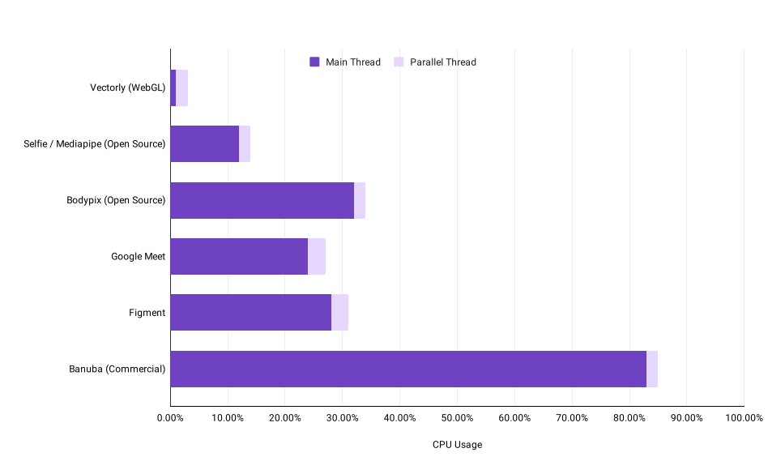
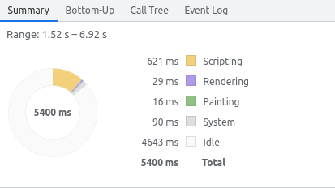
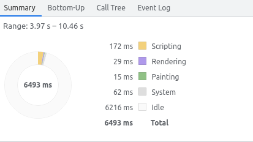

Vectorly's client-side SDK makes it easy to integrate AI filters, such as Background Filters (virtual backgrounds, background blur) as well as AI Upscaling, into WebRTC streaming applications
Installation
When you sign up, you'll get a token which, you will need to use the library. Next, you can install the ai-filters library via NPM or via CDN
We've compiled a set of AI filters from research & Academia, open source projects as well as our own custom AI filters, all of which are able to be accessed through the same Vectorly interface.
Background Filter
By using the Background Filter, you can implement features like Virtual Backgrounds or Background Blur, to give users additional privacy when calling from home. The AI model used for running background segmentation is the meet model, used by Google Meet.
Vectorly has built it's own AI Upscaling filter based on a technique called Super Resolution, which uses AI to upscale and enhance images. Through Super Resolution, we can upscale and clean-up low-resolution video, making it look close to HD quality.
Super Resolution Example:
240p
240p upscaled to 720p
Original 720p
With AI Upscaling, you can improve the clarity & quality of video streams when the source resolution is of low quality.
You can also stream SD content to users and upscale it to HD in real time as they're watching it, providing an HD viewing experience while only consuming the bandwidth for the low-resolution video (50 to 90% less data than for the HD video).
Our Background filters, based on the Google Meet background segmentaiton model, make it easy to implemet background blur and virtual background features
You can find a live demo of our virtual background filter here
Loading
The basic API for loading the background filter via NPM is:
import { BackgroundFilter } from '@vectorly-io/ai-filters';
For loading via CDN, you can access the background filter from the vectorly object
You can find more detailed loading instructions on the API reference page
Basic Usage
Vectorly's Background Filter takes as an input any MediaStream or MediaStreamTrack element, so for a WebRTC application, all you need to do is to instantiate the filter object with the MediaStream or MediaStreamTrack element you want to filter. The output is a MediaStreamTrack, which can be sent via WebRTC or loaded locally into a video element
The basic API for loading the background filter is:
The above example is for a Background Blur filter. For virtual backgrounds, where you replace the background with an image, the API is:
const filter = new BackgroundFilter(stream, {token: 'vectorly-token', background: 'my-image-url.png'});
You can find a full set of methods and parameters on the API reference page
Browser support
Our background filters are supported on all major browsers, except for internet explorer. See a table of browser support below
Chrome
Safari
Firefox
Edge
Opera
IE
WebGL model
Yes
Soon (quick fix)
Yes
Yes
Yes
No
Selfie model
Yes
Yes
Yes
Yes
Yes
No
SIMD acceleration*
Yes, since 91
No
Yes, since 89
Yes, since 84
Yes, since 77
No
Offscreen Support**
Yes
No
No
Yes
Yes
No
*SIMD acceleration
The Google Selfie model uses the CPU. With SIMD acceleration (enabled by default on supported browsers), the CPU usage tends to be ~10% - 15%, whereas if SIMD is not supported, it will take ~30% CPU Usage.
Recent versions of Chrome, Firefox, Edge and Opera support SIMD acceleration since June 2021.
**Offscreen Support Offscreen support uses OffscreenCanvas to run video-processing workloads in a worker. This both has some performance benefits and is also necessary to continue running the AI filter when the current tab is hidden or minimized.
Note
For browsers that do not have Offscreen Support, the filtered stream will pause while the user's tab is hidden / minimized, and will resume again when the user's tab is active again..
Checking support programatically
You can check if a user's browser supports SIMD acceleration or Offscreen processing via the `isSupported` API
const isSupported = BackgroundFilter.isSupported(); // False if not supported.
//If supported, object showing which features are supported.
Integration
Integrating the filter with any specific Video Conferencing API or service just requires finding the MediaStream element associated with video stream you want to filter. The following sub-sections discuss how to integrate the filter with various conferencing services.
Vanilla WebRTC
As shown above, the API for basic/general WebRTC is:
For Web deployments using Agora (specifically the 4.x API), you can just feed the video track to the Background filter, which will return a filtered video track which you can publish.
let videoTrack = AgoraRTC.createCameraVideoTrack();
let audioTrack = AgoraRTC.createMicrophoneAudioTrack();
const filter = new BackgroundFilter(videoTrack._mediaStreamTrack, {token: 'insert-vectorly-token-here', background: 'blur'});
filter.getOutputTracj().then(function(filteredTrack ){
const filteredAgoraTrack = AgoraRTC.createCustomVideoTrack({
mediaStreamTrack: filteredTrack
});
client.publish([filteredAgoraTrack, audioTrack]);
});
You can enable filters on any VideoTrack object by extracting the raw MediaStreamTrack, running the filter on that, and creating a new LocalVideoTrack.
If you're building a custom UI with Daily.co, you can use the Daily.co callObject's setInputDevices method to set the filtered video track as the upload stream.
Once you have instantiated the filter object, you can access basic filter events, like onload and error handling.
const filter = new BackgroundFilter(stream, config);
filter.on('load', function () {
console.log("filter initialized");
});
filter.on('start', function () {
console.log("Starting filter");
});
filter.on('stop', function () {
console.log("Stopping filter");
});
filter.on('error', function () {
console.log("Filter failed to initialize");
});
If the filter fails to load, then it will pass through the original video stream
Controls
You can enable and disable the filter programatically.
const filter = new BackgroundFilter(video, config);
filter.disable();
filter.enable();
Note
Calling disable() will stop the filter and return the original MediaStream object by default, and you will need to re-publish the original input MediaStream to the WebRTC client
If you want to avoid havinf to re-publish the original media stream, and just have disable/enable toggle the virtual backgrounds on one Media Stream, you can set `passthrough` in the config
const filter = new BackgroundFilter(video, {token: '...', passthrough: true});
filter.disable(); // Same media stream, but just doesn't run the background filter
filter.enable(); // Re-puts in the background filter on the media stream
You can also change the inputs to the background filter dynamically
//Change the background image, or set to "blur" to set a background blur
await filter.changeBackground("new-background-image.png");
//Change the source media stream
const devices = await navigator.mediaDevices.enumerateDevices();
const alternateWebCam = devices[1]; //Just an example, don't literally copy/paste this
const alternateWebCamStream = navigator.getUserMedia({video: {deviceId: alternateWebCam.deviceId}});
await filter.changeInput(alternateWebCamStream);
You can also set the blur level (on a scale of 1 to 10) on initialization, or dynamically with changeBlurRadius method
const filter = new BackgroundFilter(stream, {token: 'vectorly-token', background: 'blur', blurRadius: 5});
filter.changeBlurRadius(3); // 3/10 is less blurry than 5/10
You can see a full set of available methods in the API documentation
WebGL Model
Vectorly's Background SDK provides two AI models for segmentation:
Our WebGL model is based on MobileNet V3 (similar to the Google Selfie model). While the Google Selfie model is implemented in Web Assembly (which runs on the CPU), Vectorly's model runs in WebGL, meaning the AI model runs on the user's integrated graphics card (or GPU).
This leads to significantly lower CPU usage for the same quality (see below):

Note
The Vectorly WebGL model is currently in Beta, and not enabled by default
You can test see a demo of both models here.
To use it yourself,you can enable it using the model parameter, which you can set to webgl or selfie.
For loading via CDN, you can access the upscaling filter as the UpscaleFilter object, which will be available in the global scope
For web environments, we've packaged our upscaler as a standalone Javascript library, as well as as plugins to several popular HTML5 video players (see the full API for more detail).
Basic usage
For the UpscaleFilter, the basic API involves instantiating an UpscaleFilter object, and specifying a video element.
const video = document.getElementById("video");
const config = {
token: '...'
};
const upscaler = new UpscaleFilter(video, config);
This automatically upscales the video, by overlaying a canvas element with the upscaled video frames on top of the video element. When the video plays, the upscaler will automatically upscale each frame and update the canvas element. See the styling section for more detail.
Browser support
Our upscaling filters are supported on all major browsers, except for internet explorer. See a table of browser support below
Chrome
Safari
Firefox
Edge
Opera
IE
Supported
Yes
Yes
Yes
Yes
Yes
No
Integration
General WebRTC
The UpscaleFilter works with any video tag, so for a WebRTC application, all you need to do is to instantiate the upscaler object with the video element you want to upscale.
const upscaler = new UpscaleFilter(document.getElementById("remoteVideo"), {token: 'insert-vectorly-token-here'});
We have an example repository, showing how Vectorly can be integrated with WebRTC, as well as a full working general WebRTC demo here.
Integrating the upscaler with any specific Video Conferencing API or service just requires finding the video element associated with video stream you want to upscale.
Jitsi
You can enable upscaling on any VideoTrack object by intercepting the corresponding video element you attach it to (see reference).
The Amazon Chime Video Processor API provides an canvas as your input, and provdes a destination canvas as your output. All you need to do is use the vectorly core library, configure it to render to the output canvas, and feed it the input canvas and render on each render cycle
The above is a code snipped taken from our full working demo repository, which you can find here
Twilio
You can enable upscaling on any VideoTrack object by intercepting the corresponding video element you attach it to (see reference).
If you use the track.attach() method to create a video element:
const Video = require('twilio-video');
Video.createLocalVideoTrack().then(function(videoTrack) {
const videoElement = videoTrack.attach();
document.body.appendChild(videoElement);
const upscaler = new UpscaleFilter(videoElement.current, {token: 'insert-vectorly-token'});
});
If you specify your own video element:
const Video = require('twilio-video');
const videoElement = document.createElement('video');
document.body.appendChild(videoElement);
Video.createLocalVideoTrack().then(function(videoTrack) {
videoTrack.attach(videoElement);
const upscaler = new UpscaleFilter(videoEl.current, {token: 'insert-vectorly-token'});
});
OpenTok / Vonage
When a Subscriber or Publisher creates a video element you can intercept it and feed that video to the Vectorly Upscaler.
You can use the subscriber.element property to intercept the video element
This also works with a publisher object. Refer to the Vonage documentation for styling - Vectorly's upscaler will fit within the styling defined by OpenTok.
You can integrate Vectorly's AI upscaler with Daily.co if you're building a custom custom video chat interface . Using the default React code sample from Daily, we've built a full working demo reference
useEffect(() => {
videoEl.current &&
(videoEl.current.srcObject = new MediaStream([videoTrack]));
if (videoEl.current && props.isLarge) {
window.upscalers = window.upscalers || {}
window.upscalers[videoTrack.id] = new UpscaleFilter(videoEl.current, {token: 'insert-vectorly-token'});
}
}, [videoTrack]);
You just need to make sure you intercept the video element associated with the video track you want to upscale.
Vectorly's AI upscaler is not compatible with the pre-built UI from Daily.co, as the pre-built UI is loaded via iframe, making it impossible to access the video element through a third party application.
Electron
If you're building an electron app, the Vectorly library is fairly plug and play, and will work with either CDN or NPM installation.
When you feed that video element to the Upcaler instantiation function, it will create a canvas element as a sibling node, with the same parent node as the video element.
<div id="container">
<video src="video.mp4" style="visibility: hidden"></video>
<canvas id="output" ></canvas> // Where the upscaled frames are drawn
</div>
The upscaler library styles this canvas to occupy 100% of the width and height of the parent element, which in practice, covers the video element in most HTML5 video player interfaces.
To have more control over the styling and position of the output, you can use the containeroption, to specify a div element to place the destination canvas.
const video = document.getElementById("video");
const div = document.getElementById("my-div");
const config = {
token: '...',
container: div //Any div element,
};
const upscaler = new UpscaleFilter(video, config);
The output canvas will occupy the exact dimensions of the container div, and will dynamically resize and re-position whenever the container div is moved, resized or changed. To dynamically style and position the output therefore, you should style and position the container element.
Models
There are multiple AI models you can choose from. The default is 'residual_3k_3x', but you can specify a model when instantiating the upscaler object
We are constantly releasing new models. You can find a comprehensive list of models here
Low level controls
For use cases where lower level control is needed, such as upscaling indidual frames or images, using a custom decoder or upscaling as part of a broader image processing pipeline, you can use the vectorly-core library.
With the low level upscaling API, you have control over
The Input source
The destination
When rendering happens
Loading
The API for loading the Core Upscaler is
NPM
import { UpscaleCoreFilter } from '@vectorly-io/ai-filters';
The load function returns a promise, which is fulfilled when the upscaler loads, and is rejected when it fails to load.
This is **on top** of the regular on('load') and on('error') behavior, so you can either use the promise or the load/error events for flow control and/or error handling
If you want to upscale multiple streams to different canvases, you will need to define a seperate upscaler for each canvas element.
Setting an input
At any time, you can set the input of the upscaler via the upscaler.setInput() method
upscaler.setInput(source); // Sets input element
Accepted sources include
HTMLImageElement
HTMLCanvasElement
HTMLVideoElement
ImageData
ImageBitmap
Anything else that the texImage2d function accepts
Note
The architecture of the Neural Network is such that it will expect a fixed-side input (the one specified in the load function) during your render cycle. If you provide inputs different from the input size, the inputs will be resized to the fixed input resolution.
Rendering
Finally, you can render using
upscaler.render();
Which will run the AI upscaling process on the canvas
Styling & Scaling
You need to set the input width and height of your input image or video streaming using the w and h properties in the constructor.
Based on whether you are using a 2X network, or 3X network, it will set the canvas.width and canvas.height property to 2x or 3x the specified w and h.
If you want your canvas to be displayed at anything other than 2*wby 2*h on the screen, you should use CSS styling.
The browser will still upscale the image from wxh to 2*w x 2*h, but will then use CSS styling & scaling (bicubic scaling) to scale the final output to the height/width you specify via CSS.
When running AI filters on client-devices, the most practical challenge is client side performance, as it requires doing large numbers of computations. This can especially become an issue when dealing with low-end devices (such as entry-level smartphones).
Accordingly, we have focused a great deal on making our AI models as efficient as possible, to enable good quality outputs while still maintaining good client-side rendering performance on low-end devices.
Background Segmentation
Vectorly's Background SDK provides two AI models for segmentation:
Vectorly's WebGL model has uses significantly less CPU usage than any existing alternative, as the computation is done on the device's integrated graphics card (via WebGL).
Note
The Background SDK will use the Google Selfie model by default
You can see sample profiling results for the Google Selfie model, and the Vectorly WebGL model run on the same input webcam at 30fps


Google Selfie (with SIMD acceleration)
Vectorly WebGL
These tests were run on a 2021 Dell XPS 13, with 11th Generation Core i7 processors. You can verify performance for yourself on any deivce with a profiling tool like Google Chrome's performance profiler.
Performance API
For checking the performance on a given device, you can use the static checkPerformance method without actually instantiating it on a screen.
Setting analyticsEnabled to true will also load analytics.js, which itself loads a version of Sentry.js, and sends anonymous performance data back to our servers.
Performance Considerations
The performance of the Background Filter (whichever model) is largely dependant on the the following 2 factors
Resolution
Framerate
If you are seeing dropped frames or laggy performance, the main recommendations would be to keep the resolution low (360p or 480p), or to restrict the framerate. You can adjust these settings either directly in the source video stream or by specifying it in the Vectorly Filter Config:
The framerate is the framerate at which the whole video filter is processed, whereas the segmentation Framerate controls how often the segmentation is done. You can do the segmentation less often (say, at 15fps) on a 30fps stream, without noticeable visual impact for the user.
You can find more information about config options in the API documentation
Performance Bottlenecks
As an explanation of where performance issues may arise, the Background filter consists of the following steps
Capture Frame from Input Stream
Send Frame to WebGL
Run AI Inference
Post Processing
Write Frame to Canvas
Capture Frame from Input Stream
The following table outlines what resources are being used by each step, and what that usage scales with:
Selfie Model
Uses CPU?
Uses GPU?
Scales with Resolution?
Scales with Video FrameRate?
Scales with Segmentation Frame Rate?
1. Capture Frame from Input Stream
Yes
No
Yes
Yes
No
2. Send Frame to WebGL
Yes
Yes
Yes
Yes
No
3. Run AI Inference
Yes
No
No
No
Yes
4. Post Processing
No
Yes
No
Yes
No
5. Write frame to Canvas
Yes
No
Yes
Yes
No
6. Get Output Stream
Yes
No
Yes
Yes
No
WebGL Model
Uses CPU?
Uses GPU?
Scales with Resolution?
Scales with Video FrameRate?
Scales with Segmentation Frame Rate?
1. Capture Frame from Input Stream
Yes
No
Yes
Yes
No
2. Send Frame to WebGL
Yes
Yes
Yes
Yes
No
3. Run AI Inference
No
Yes
No
No
Yes
4. Post Processing
No
Yes
No
Yes
No
5. Write frame to Canvas
Yes
No
Yes
Yes
No
6. Get Output Stream
Yes
No
Yes
Yes
No
While for some larger / slower models like Bodypix, the AI Inference itself used a lot of resources, Vectorly's AI-model implementations are light enough that the main sources of resource-consumption are the overhead of sending data to the canvas (2) and using canvas.captureStream()(6)
AI Upscaling
The primary "cost" to doing super-resolution is computational complexity. While we have put a lot of work into making super resolution feasible on client devices, it is still something which needs to be managed. Here, we provide some initial performance benchmarks for the same demos shown above, in the demos sections.
Performance Considerations
AI Upscaling does require some computational effort, however it is mostly on the graphics card, so AI Upscaling's impact on CPU is limited. The amount of computation (and therefore the framerate / performance) depends on the size of input video you are upscaling
The following table should give a rough idea performance for different input video resolutions. These results are only for Web environments. Our mobile SDKs will have access to more powerful native libraries, enabling significantly better performance.
240p -> 480p/720p
360p -> 720p/1080p
480p -> 960p/1440p
High End Smartphone
120 fps
40 fps
14fps
Mid-range Smartphone
80 fps
28 fps
9 fps
Low-End Smartphone
20fps
6fps
3fps
Mid-range Laptop
100fps
35fps
8fps
GPU Desktop
200+fps
200+fps
80 fps
You can measure the fps on any given device by adding the analyticsEnabled flag as true in the configuration parameters.
You can then measure the fps at any time with upscaler.metrics.fps property. The fps number provided by upscaler.metrics.fps will not exceed the source video's frame rate because we only render when a video frame changes.
It's recommended to stick to 240p or 360p inputs, as mid-range devices tend to struggle with larger inputs. You can also disable upscaling if the fps gets too low.
Quality
The primary benefit of Super resolution is to increase video quality. Using the original high-resolution video as a reference, we can use traditional video quality metrics like VMAF to quantify the quality improvement of Super Resolution, when compared to normal bicubic upscaling of the downsampled / low-resolution video content.
Our general AI upscaler filter generally achieves a 10 to 15 point VMAF improvement compared to bicubic scaling. With content-specific AI models, or heavier models, we will likely be able to achieve further quality gains. We are currently working on releasing quality comparisons for content specific models.
Quality visualization
For reference, below are side by side comparisons of bicubic upscaling of the low-resolution original / Super resolution of the low-resolution / High resolution original